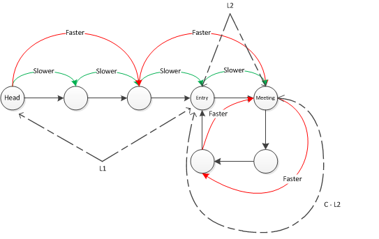

Given a linked list, return the node where the cycle begins. If there is no cycle, return null.
Follow up:
Can you solve it without using extra space?
题意：
判断一个链表是否有环，有环的话返回环的起始节点，无环的话返回NULL。
题解：
Linked List Cycle的升级，不仅要判断有无环，还要求入口。很显然可以在Linked List Cycle的基础上来做。
这里我直接翻译ngcl的answer，写得非常好：
- 用slower和faster方法判断是否有环；
- 设链表的头节点是head，环的入口节点是entry，slower和faster2个指针相遇的节点是meeting;
- 设L1是head到entry的正向距离，L2是entry到meeting的正向距离，C是环的长度，n是faster指针在cycle里遍历的次数(不到一遍算0)；
根据上面的定义，可知：
- 当slower和faster相遇时，slower已经走了L1 + L2的距离，也即head和meeting的距离;
- 当slower和faster相遇时，faster已经走了L1 + L2 + n * C的距离;
- 因为slower步进1，而faster步进2，那么当slower和faster第一次相遇时，faster已经走的距离是slower已经走的距离的两倍，即 2* (L1 + L2) = L1 + L2 + n * C => L1 = (n - 1) * C + (C - L2)
L1 = (n - 1) * C + (C - L2) 这个等式表明， head和entry的距离(L1)，等于meeting到entry的正向距离（链表是有遍历方向的）。
这是因为式子中的 (n - 1) * C相当于走n-1个循环，对一个指向meeting的环内指针来说，走(n - 1) * C等于回到起点，所以式子可以简化成 L1 = C - L2。
画成图是这样子：

ngcl的代码如下：
1
2
3
4
5
6
7
8
9
10
11
12
13
14
15
16
17
18
19
20
21
ListNode *detectCycle(ListNode *head) {
if (head == NULL || head->next == NULL)
return NULL;
ListNode *slow = head;
ListNode *fast = head;
ListNode *entry = head;
while (fast->next && fast->next->next) {
slow = slow->next;
fast = fast->next->next;
if (slow == fast) { // there is a cycle
while(slow != entry) { // found the entry location
slow = slow->next;
entry = entry->next;
}
return entry;
}
}
return NULL; // there has no cycle
}
(未经授权禁止转载)
Written on July 8, 2015
博主将十分感谢对本文章的任意金额的打赏^_^